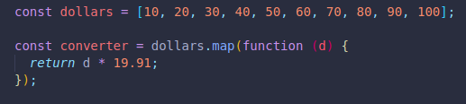
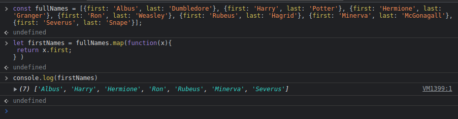

This methodd creates a new array with the results of calling a callback on every item of an array.
It makes it easy to see the difference between our original array, and the new one we created after the function ran on every item.
Here we use the map() method to access the key of each object, it is returned and saves to a new array called firstNames.
